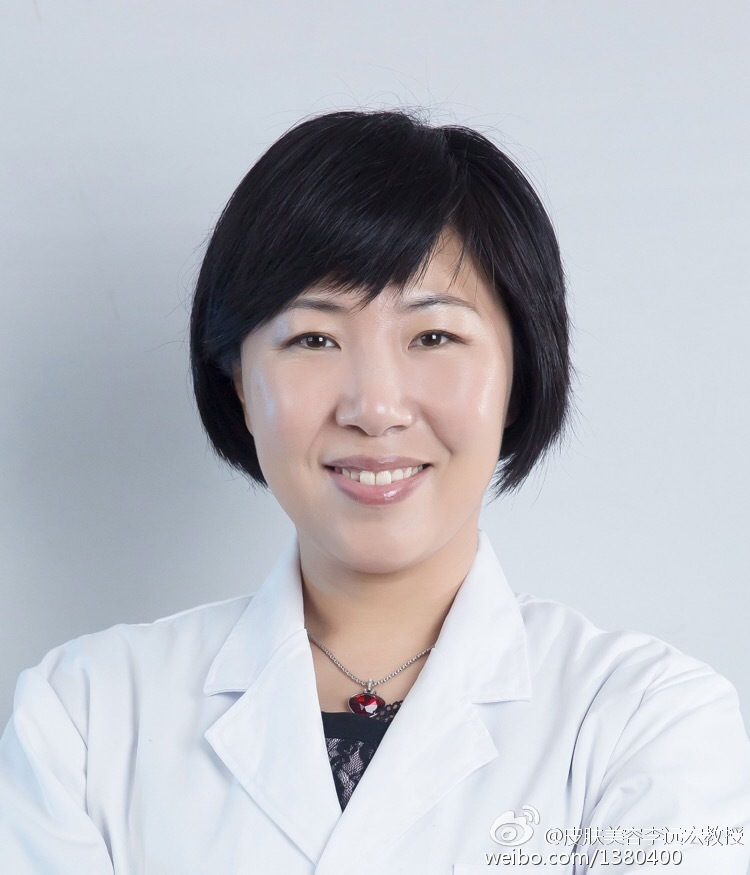

@皮肤美容李远宏教授:
#皮肤问题# 大家好！欢迎大家来这里咨询。李远宏博士、教授、主任医师、博士研究生导师。中国医科大学第一医院皮肤科副主任、中国医科大学光医学中心副主任。留学法国，师从陈洪铎院士。
目前主攻方向为美容皮肤科学。现任国际皮肤与美容外科联盟（Dermatologic aesthetic and surgery international league, DASIL）常委、亚太皮肤屏障研究协会（Pan Asian-Pacific Barrier Research Society, PAPBRS）常委、美国激光医学学会会员、中国整形美容协会激光美容分会副主委、中国整形美容协会新技术新材料学会副主委、中华医学会皮肤性病学分会激光亚专业副主委、中国医师协会皮肤性病学分会激光与理疗专业委员会副主委、中国医师协会皮肤美容分会常委、辽宁省激光医学会副主任委员、多家化妆品公司顾问、《中华皮肤科杂志》编委、《实用皮肤科杂志》编委、《中国美容医学》杂志编委。担任卫生部化妆品皮肤病诊断工作。在专业性期刊上发表论文110篇（英文SCI 40余篇）。主持并参与多项国家自然基金课题以及横向课题共24项。
目前主攻方向为美容皮肤科学。现任国际皮肤与美容外科联盟（Dermatologic aesthetic and surgery international league, DASIL）常委、亚太皮肤屏障研究协会（Pan Asian-Pacific Barrier Research Society, PAPBRS）常委、美国激光医学学会会员、中国整形美容协会激光美容分会副主委、中国整形美容协会新技术新材料学会副主委、中华医学会皮肤性病学分会激光亚专业副主委、中国医师协会皮肤性病学分会激光与理疗专业委员会副主委、中国医师协会皮肤美容分会常委、辽宁省激光医学会副主任委员、多家化妆品公司顾问、《中华皮肤科杂志》编委、《实用皮肤科杂志》编委、《中国美容医学》杂志编委。担任卫生部化妆品皮肤病诊断工作。在专业性期刊上发表论文110篇（英文SCI 40余篇）。主持并参与多项国家自然基金课题以及横向课题共24项。
- 